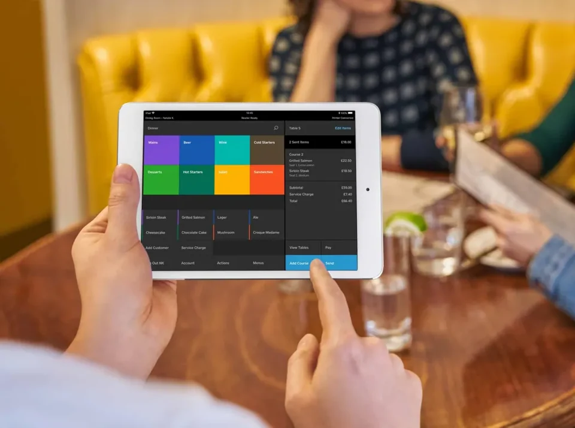
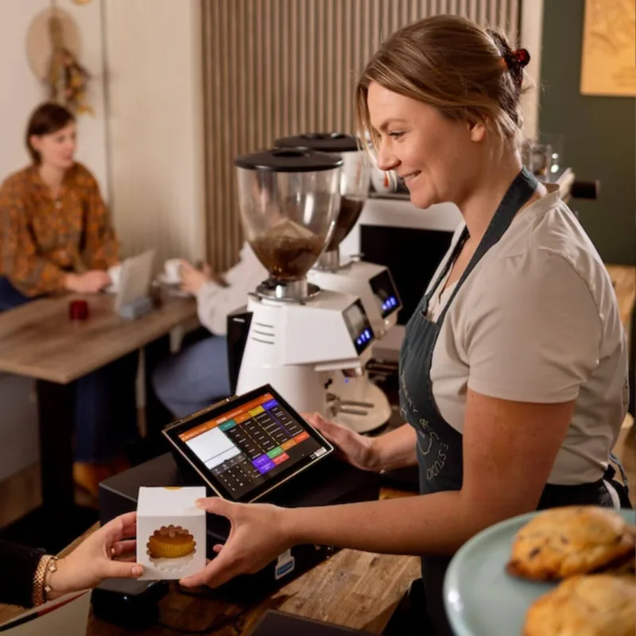
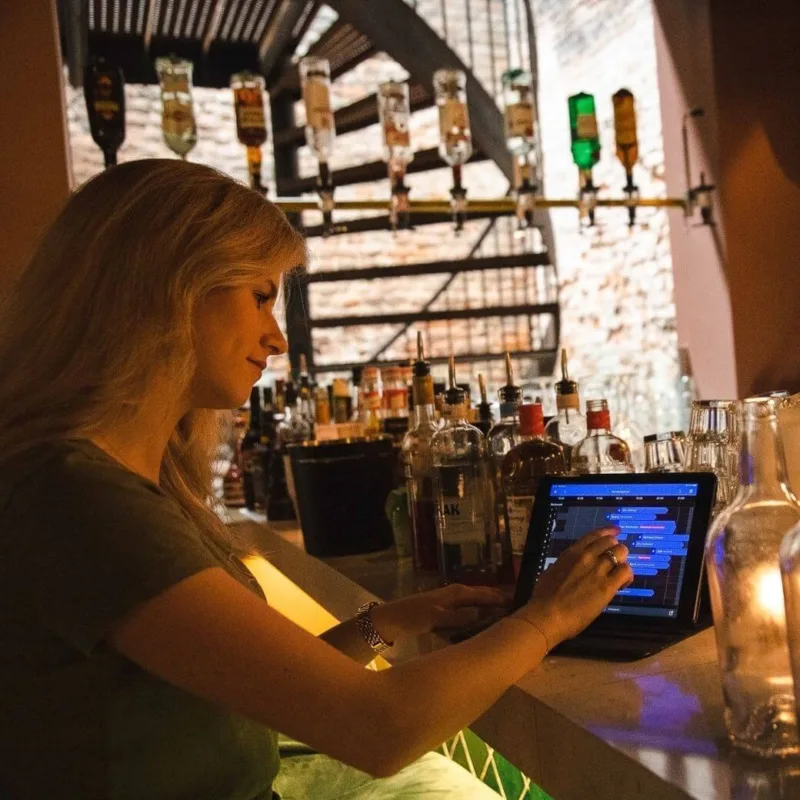

Tafelreserveringen
Beheer tafelreservaties overzichtelijk en haal meer uit de beschikbare plaatsen in jouw zaak.
Slim verbonden. Eenvoudig geregeld.
Een goed kassasysteem doet meer dan verkopen registreren. Met de slimme kassasoftware en koppelingen van Kassakompas beheer je bestellingen, betalingen, voorraad en administratie vanuit één overzichtelijke oplossing. Ontdek de mogelijkheden voor jouw horecazaak of winkel.
Van een café of restaurant tot een speciaalzaak: we stemmen de mogelijkheden af op jouw dagelijkse werking, toestellen en plannen.
Van bestelling tot inzicht
Verken twaalf oplossingen voor een vlottere werkdag. Samen bekijken we welke modules en koppelingen bij jouw kassasysteem passen.
Beheer tafelreservaties overzichtelijk en haal meer uit de beschikbare plaatsen in jouw zaak.
Gebruik intuïtieve kassasoftware op vaste of mobiele toestellen, afgestemd op jouw onderneming.
Laat gasten eenvoudig bestellen via een QR-code, rechtstreeks vanaf hun smartphone.
Geef klanten de mogelijkheid zelfstandig te bestellen via een gebruiksvriendelijke bestelzuil.
Ontvang online bestellingen voor afhaal of levering via een eigen digitaal verkoopkanaal.
Verwerk elektronische betalingen vlot en overzichtelijk met geïntegreerde betaaloplossingen.
Stuur bestellingen digitaal door naar bar of keuken en verbeter de communicatie tussen medewerkers.
Organiseer personeelsplanning, werkuren en registraties vanuit een overzichtelijke omgeving.

Vlotter van bestelling naar betaling
Van de eerste bestelling tot de betaling: met de juiste kassasoftware verloopt de dagelijkse werking van jouw horecazaak eenvoudiger en overzichtelijker.
Een kassasysteem voor horeca kan je bediening ondersteunen met QR-bestellen, digitale keukensturing of een online bestelsysteem voor afhaal. We bekijken welke combinatie past bij jouw service.
Ontdek onze horecaoplossingen →Ook achter de schermen
Laat je kassasoftware ook buiten het afrekenen voor je werken, met aanvullende toepassingen voor jouw onderneming.
Beloon trouwe klanten met klantenkaarten, spaarpunten en gerichte acties.
Volg verkoopcijfers, prestaties en belangrijke bedrijfsgegevens via duidelijke rapporten.
Vereenvoudig jouw administratie door verkoopgegevens en financiële informatie te koppelen aan boekhoudsoftware.
Automatiseer het beheer van contant geld met een gekoppelde CashKeeper-oplossing voor een vlottere en veiligere kasafhandeling.
Van losse taken naar meer overzicht
Door kassasoftware, betalingen en aanvullende toepassingen slim op elkaar af te stemmen, creëer je een efficiëntere werking en een betere klantenervaring.
Ook kassasoftware voor retail kan helpen om verkoopgegevens, klantenbinding en rapportering overzichtelijk samen te brengen. Zoek je een kassasysteem voor winkels of een kassasysteem met boekhouding? We vertrekken vanuit je huidige werkproces en bespreken wat mogelijk is.
Geen onnodige modules: eerst jouw behoeften, dan een passende oplossing.
Bekijk de mogelijkheden voor retail →

Goed om te weten
KassaKompas adviseert horecazaken en winkels in België. We maken duidelijk wat een oplossing voor jouw dagelijkse werking kan betekenen.
Dat hangt af van je sector, het aantal werkplekken en hoe je bestellingen en betalingen verwerkt. Voor horeca kunnen tafelbeheer en keukensturing relevant zijn; voor retail bijvoorbeeld klantenbinding en verkooprapportering. We bespreken eerst jouw noden en stellen daarna een passende combinatie voor.
Een boekhoudkoppeling kan verkoopgegevens en financiële informatie helpen doorgeven aan boekhoudsoftware. Welke gegevens en systemen ondersteund worden, hangt af van de gekozen oplossingen. We controleren de compatibiliteit vooraf samen met jou en waar nodig je boekhouder.
Nee. QR-bestellen voor horeca en een online bestelsite zijn mogelijke uitbreidingen. Beschikbaarheid, werking en kosten hangen af van de kassasoftware en de gekozen modules. Die bespreken we voordat je een keuze maakt.
Een gekoppelde CashKeeper-oplossing kan de afhandeling van contant geld automatiseren. Of een CashKeeper-koppeling voor jouw zaak mogelijk is, moet worden bevestigd op basis van je kassasoftware en het gekozen toestel.
De volgende stap
Elke horecazaak en winkel werkt anders. Kassakompas helpt je graag bij het kiezen van een kassasysteem en de koppelingen die aansluiten bij jouw dagelijkse werking.